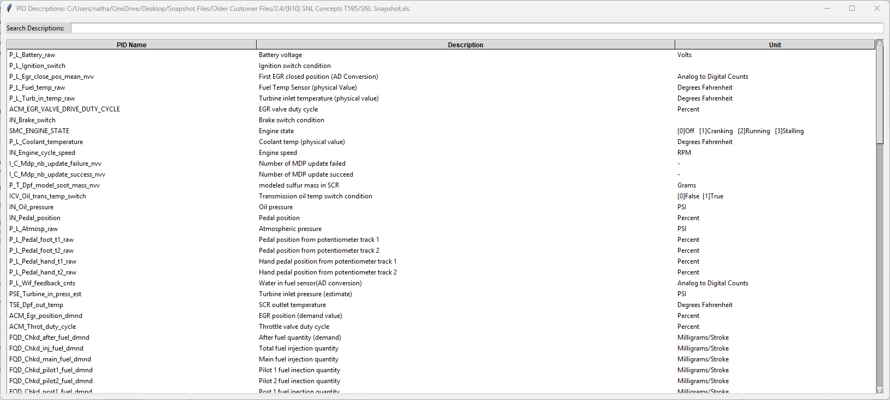

PID Descriptions Panel
The PID Descriptions panel displays all available parameters (PIDs) from the loaded snapshot. This panel makes it easy to search for specific parameters and add them to custom charts.

Understanding the PID List
Each entry in the list shows:
- PID Name - The parameter identifier or description
- Unit of Measure - The measurement unit (e.g., RPM, PSI, °F)
The list displays all PIDs extracted from the snapshot, making it easy to see what data is available for charting and analysis.
Search Function
The search box at the top of the panel allows you to quickly find specific PIDs:
- Type any part of a PID description into the search box
- The list automatically filters to show only matching PIDs
- Search is not case-sensitive
- Clear the search box to show all PIDs again
Tip: Use the search function to quickly locate parameters like "pressure", "temp", or "speed"
without scrolling through the entire list.
Adding PIDs to Charts
You can create custom charts by selecting PIDs and adding them to either the primary or secondary axis:
Selecting PIDs
- Single Selection - Click on a PID to select it
- Add to chart - Double click PID to bring up the add to chart window
- Range Selection - Hold Shift and click to select a range of PIDs
Primary Axis
After double-clicking a PID, click the Add to Primary Axis button.
PIDs on the primary axis will be plotted on the left Y-axis of the chart.
Use the primary axis for your main parameters of interest.
Secondary Axis
After double-clicking a PID, click the Add to Secondary Axis button.
PIDs on the secondary axis will be plotted on the right Y-axis of the chart.
Use the secondary axis for parameters with different units or scales that you want to
compare with the primary data.
Creating the Chart
PIDs will be plotted on the axis of your choice as you add them:
- Review your selections in the axis lists and the chart window
- The PID Descriptions window can remain open while you modify the chart as needed
- Adjust axis ranges as needed
Tips
- Group related parameters on the same axis for easier comparison
- Use the secondary axis for parameters with very different scales (e.g., temperature vs. pressure)
- You can add multiple PIDs to each axis to compare several parameters at once
- Use the search function to find related parameters quickly (e.g., search "fuel" to see all fuel-related PIDs)